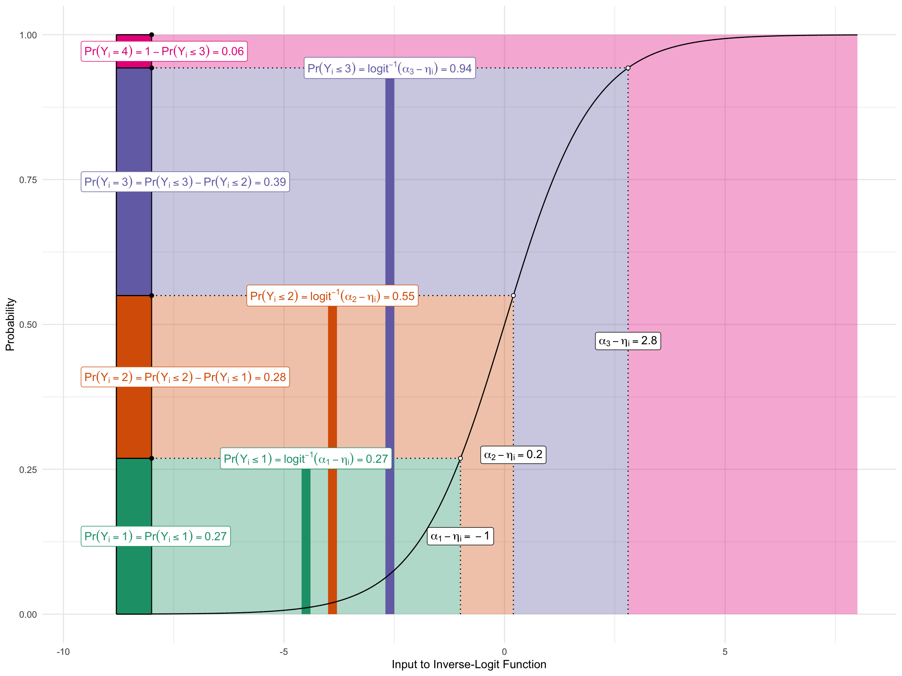

Appendix H — Ordered Logit
H.1 Ordered Outcomes
Suppose an ordered outcome \(y_i \in \{1, 2, \ldots, J\}\), where \(\{1, 2, \ldots, J\}\) correspond to qualitative labels that have a natural ordering.
Example 1. The ANES asks respondents to place themselves along a 7-point ideology scale with positions labeled “extremely liberal,” “liberal,” “slightly liberal,” “moderate/middle of the road,” “slightly conservative,” “conservative,” and “extremely conservative.” We typically let 1, 2, 3, 4, 5, 6, and 7. correspond to these seven ordered labels.
Example 2. The Political Terror Scale (PTS) is a country-year measure of state repression. This measure assigns one of five qualitative labels summarizing the amount of state repression to each country-years based on reports from Amnesty International and the U.S. State Department.
| Numeric Coding | Qualitative Label |
|---|---|
| 1 | Countries under a secure rule of law, people are not imprisoned for their views, and torture is rare or exceptional. Political murders are extremely rare. |
| 2 | There is a limited amount of imprisonment for nonviolent political activity. However, few persons are affected, torture and beatings are exceptional. Political murder is rare. |
| 3 | There is extensive political imprisonment, or a recent history of such imprisonment. Execution or other political murders and brutality may be common. Unlimited detention, with or without a trial, for political views is accepted. |
| 4 | Civil and political rights violations have expanded to large numbers of the population. Murders, disappearances, and torture are a common part of life. In spite of its generality, on this level terror affects those who interest themselves in politics or ideas. |
| 5 | Terror has expanded to the whole population. The leaders of these societies place no limits on the means or thoroughness with which they pursue personal or ideological goals. |
H.2 Ordered Logit
Let linear predictor \(\eta_i\) be our usual linear predictor so that \(\eta_i = X_i^\beta\), except without an intercept \(\beta_0\).
Now define \(J-1\) “cutpoints” \(\alpha_1 < \alpha_2 < \cdots < \alpha_{J-1}\) that act as a separate intercept for each category.
The ordered logit defines the the cumulative probabilities as
\[ \Pr(Y_i \leq j) = \text{logit}^{-1}(\alpha_j - \eta_i), \qquad j = 1, \ldots, J-1. \]
Then probabilities for each category are
\[ \begin{align} \Pr(Y_i = 1) &= \text{logit}^{-1}(\alpha_1 - \eta_i) \\ \Pr(Y_i = 2) &= \text{logit}^{-1}(\alpha_2 - \eta_i) - \text{logit}^{-1}(\alpha_{1} - \eta_i) \\ \Pr(Y_i = 3) &= \text{logit}^{-1}(\alpha_3 - \eta_i) - \text{logit}^{-1}(\alpha_{3} - \eta_i) \\ &\vdots\\ \Pr(Y_i = j) &= \overbrace{\text{logit}^{-1}(\alpha_j - \eta_i)}^{\Pr(Y_i \leq j)} - \overbrace{\text{logit}^{-1}(\alpha_{j-1} - \eta_i)}^{^{\Pr(Y_i \leq j-1)}}, \qquad j = 2, \ldots, J-1 \\ &\vdots\\ \Pr(Y_i = J) &= 1 - \text{logit}^{-1}(\alpha_{J-1} - \eta_i). \end{align} \]
The figure below shows this graphically for an outcome with four possible values.
- I set the three cutpoints to \(\alpha = (-2.5,-1.3,1.3)\).
- I set the linear predictor for an example observation to \(\eta_i = -1.5\).
The figure shows how \(\alpha\) and \(\eta_i\) are translated into \(\Pr(y_i = j)\).
H.3 Example
As an example, we can model party ID as a function of age and race.
H.3.1 polr()
# load data
df <- forcats::gss_cat |>
mutate(race = fct_drop(race)) |>
mutate(partyid = case_when(partyid == "No answer" ~ NA,
partyid == "Don't know" ~ NA,
partyid == "Other party" ~ NA,
TRUE ~ partyid),
partyid = fct_drop(partyid)) |>
glimpse()Rows: 21,483
Columns: 9
$ year <int> 2000, 2000, 2000, 2000, 2000, 2000, 2000, 2000, 2000, 2000, 20…
$ marital <fct> Never married, Divorced, Widowed, Never married, Divorced, Mar…
$ age <int> 26, 48, 67, 39, 25, 25, 36, 44, 44, 47, 53, 52, 52, 51, 52, 40…
$ race <fct> White, White, White, White, White, White, White, White, White,…
$ rincome <fct> $8000 to 9999, $8000 to 9999, Not applicable, Not applicable, …
$ partyid <fct> "Ind,near rep", "Not str republican", "Independent", "Ind,near…
$ relig <fct> Protestant, Protestant, Protestant, Orthodox-christian, None, …
$ denom <fct> "Southern baptist", "Baptist-dk which", "No denomination", "No…
$ tvhours <int> 12, NA, 2, 4, 1, NA, 3, NA, 0, 3, 2, NA, 1, NA, 1, 7, NA, 3, 3…# look at outcome
levels(df$partyid)[1] "Strong republican" "Not str republican" "Ind,near rep"
[4] "Independent" "Ind,near dem" "Not str democrat"
[7] "Strong democrat" # fit ordered logit model
fit <- MASS::polr(partyid ~ age*race, data = df, Hess = TRUE)
# summarize fit
summary(fit)Call:
MASS::polr(formula = partyid ~ age * race, data = df, Hess = TRUE)
Coefficients:
Value Std. Error t value
age 0.006391 0.002700 2.367
raceBlack 0.388149 0.145785 2.662
raceWhite -0.372259 0.118424 -3.143
age:raceBlack 0.016566 0.003410 4.858
age:raceWhite -0.004478 0.002819 -1.588
Intercepts:
Value Std. Error t value
Strong republican|Not str republican -2.1803 0.1129 -19.3158
Not str republican|Ind,near rep -1.1352 0.1116 -10.1686
Ind,near rep|Independent -0.7013 0.1114 -6.2974
Independent|Ind,near dem 0.1631 0.1112 1.4667
Ind,near dem|Not str democrat 0.7035 0.1114 6.3169
Not str democrat|Strong democrat 1.7520 0.1123 15.5953
Residual Deviance: 77509.31
AIC: 77531.31
(612 observations deleted due to missingness)H.3.2 Probabilities with {marginaleffects}
# use {marginaleffects}
library(marginaleffects)
p <- predictions(fit,
variables = list(age = 25:75),
newdata = datagrid(race = unique)) |>
glimpse()Rows: 1,071
Columns: 14
$ rowid <dbl> 1, 2, 3, 4, 5, 6, 7, 8, 9, 10, 11, 12, 13, 14, 15, 16, 17, 1…
$ rowidcf <int> 1, 2, 3, 1, 2, 3, 1, 2, 3, 1, 2, 3, 1, 2, 3, 1, 2, 3, 1, 2, …
$ group <fct> "Strong republican", "Strong republican", "Strong republican…
$ estimate <dbl> 0.08785574, 0.04139204, 0.13518215, 0.08734494, 0.04049068, …
$ std.error <dbl> 0.004540840, 0.002141267, 0.003422155, 0.004380073, 0.002043…
$ statistic <dbl> 19.34791, 19.33063, 39.50206, 19.94143, 19.81409, 40.18805, …
$ p.value <dbl> 2.122961e-83, 2.967508e-83, 0.000000e+00, 1.778963e-88, 2.25…
$ s.value <dbl> 274.6340, 274.1508, Inf, 291.4986, 287.8376, Inf, 309.0754, …
$ conf.low <dbl> 0.07895585, 0.03719523, 0.12847485, 0.07876015, 0.03648544, …
$ conf.high <dbl> 0.09675562, 0.04558884, 0.14188945, 0.09592972, 0.04449592, …
$ partyid <fct> "Independent", "Independent", "Independent", "Independent", …
$ race <fct> Other, Black, White, Other, Black, White, Other, Black, Whit…
$ age <int> 25, 25, 25, 26, 26, 26, 27, 27, 27, 28, 28, 28, 29, 29, 29, …
$ df <dbl> Inf, Inf, Inf, Inf, Inf, Inf, Inf, Inf, Inf, Inf, Inf, Inf, …ggplot(p, aes(x = age, y = estimate, color = group)) +
geom_line() +
facet_wrap(vars(race))
H.3.3 Computing cumulative probabilities
cumulative_p <- p %>%
arrange(race, age, group) %>%
group_by(race, age) %>%
mutate(cumulative_prob = cumsum(estimate),
j = as.integer(group),
cdf_label = paste0("Pr(Y ≤ ", group, ")"),
cdf_label = reorder(cdf_label, -j)) %>%
ungroup()
ggplot(cumulative_p, aes(x = age, y = cumulative_prob, color = cdf_label)) +
geom_line() +
facet_wrap(vars(race)) 
We can use position = "stack" to trick ggplot() into plotting the cumulative probabilities for us if we don’t want to compute them manually first.
ggplot(p, aes(x = age, y = estimate, color = group)) +
geom_line(position = "stack") +
facet_wrap(vars(race))
ggplot(p, aes(x = age, y = estimate, fill = group)) +
geom_area(position = "stack") +
facet_wrap(vars(race))